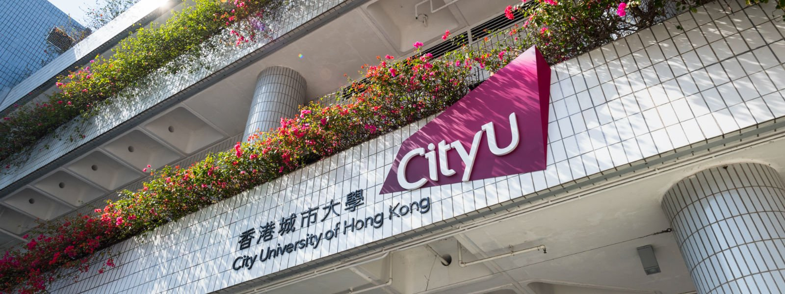
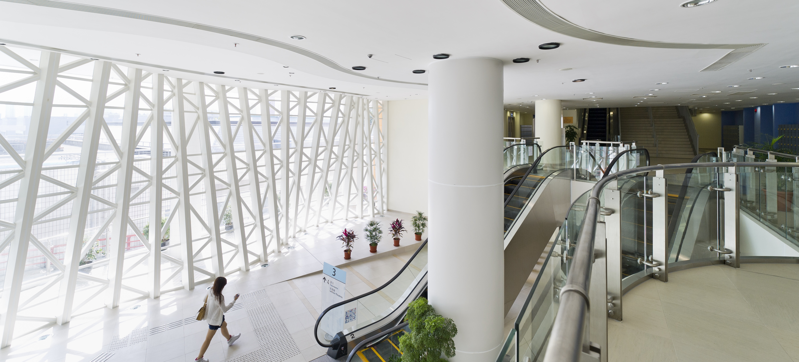

Welcome to the LAnguages, Machines & Brains Lab (LAMB)

Research topics covered include:
• Media Neuroscience
• Cognitive Neuroscience
• Communication Neuroscience
• Neurolinguistics
• Electroencephalogram (EEG) and functional Magnetic Resonance Imaging (fMRI) for social science research
Dr. Li gave a poster presentation titled "Modeling multi-talker speech comprehension in normal and hearing-impaired listeners".
Roundtable forum topics: take ChatGPT as an example to explore the relationship between artificial neural language models and language processing in the human brain:
1. Does ChatGPT resemble human language processing?
2. Can neural language models help us understand how the brain processes language?
3. How can studies of language processing in the human brain help advance natural language processing models?
Find the seminar and registration details here.

This reading seminar will discuss two review articles about the syntactic and semantic abilities of deep learning language models. The outline of the seminar is as follows:
1. Syntax: long-distance agreement, nature vs nurture.
2. Reading: Syntactic structure from deep learning.
3. Semantics: Distributional Semantics, Compositional Semantics.
4. Reading: Semantic structure in deep learning.
5. Conclusion and discussion
Find the seminar and registration details here.
This 2-day workshop covers various topics in analysing neuroimaging data, including fMRI, MEG, EEG and ECoG. The goal of the workshop is to introduce neuroimaging concepts and practice analysis skills with hands-on tutorials. Find the speakers details and tutorial titles here.